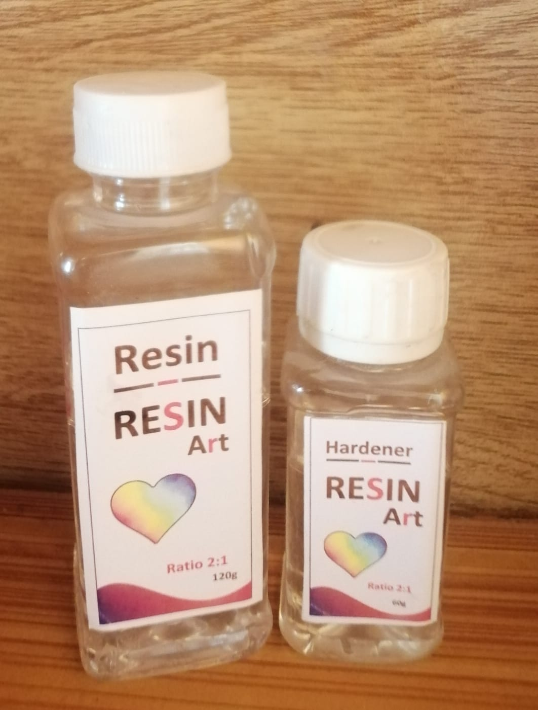
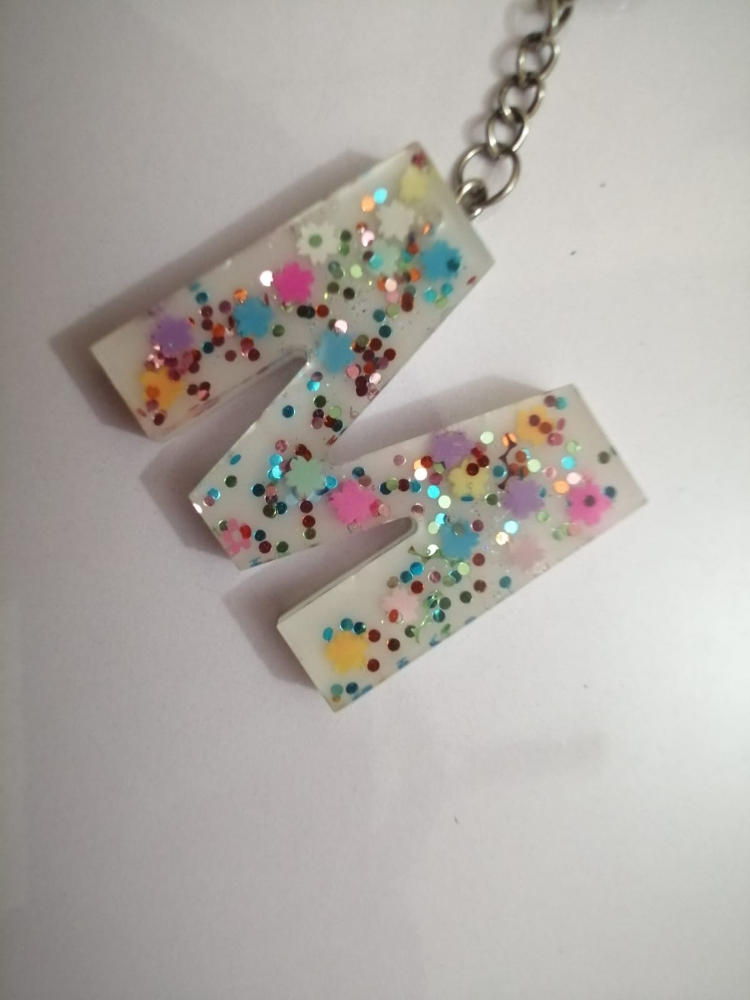

- Most common for art
- Clear,glossy finish
- Cures at room temprature
- Good for beginners

- Often used for casting.
- Strong smell, requires ventilation.
- Can be more brittle.

- Fast curing ,durable.
- Can be yellow overtime without additives.

Resin art involves using Epoxy resin, a two-part compound made up of resin and hardner, to create glossy,glass-like artworks.When mixed ,they chemically react and harden into a durable plastic-like surface.Artists use it to create paintings,jewlery,coasters,trays,sculptures,river tables,and more.
 